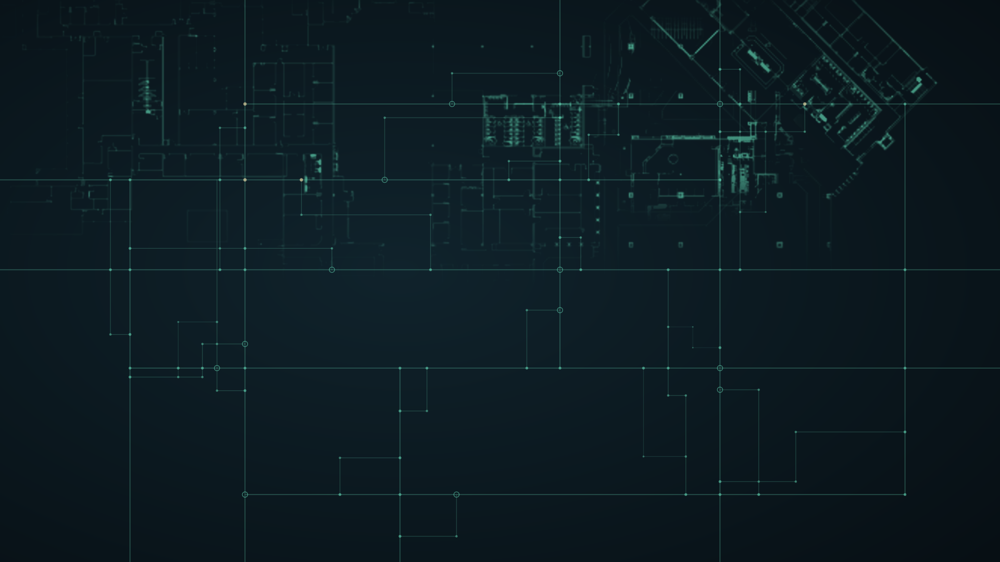
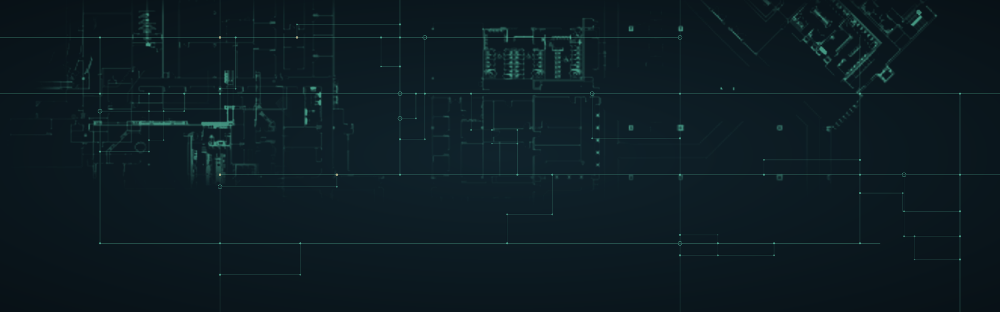
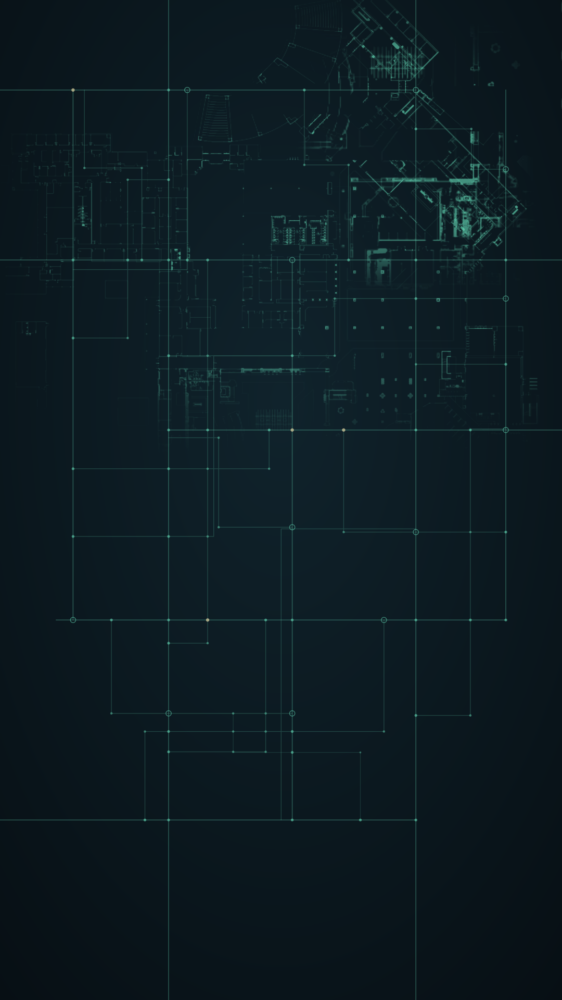
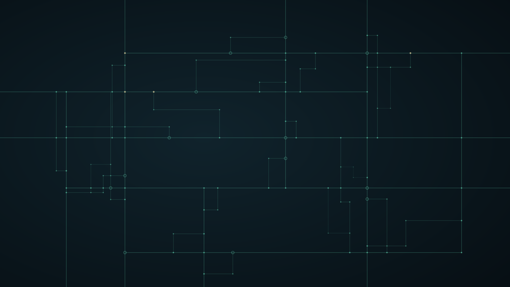

Phase 1 · canonical masters adopted
E-mesh background masters — adopted from the web kit
The canonical SVG masters are adopted from the LUCI web kit. Dark, technical background
art: a connected node/line mesh over a faded venue floorplan. The floorplan is traced from a
real venue plan (labels and zone highlights removed, footprint authentic), embedded as
base64 WebP inside each SVG. Backgrounds contain no logo and no text — place those
yourself. Every SVG has preserveAspectRatio="xMidYMid slice" so it crops
to fill like background-size: cover.
1 · Original vs the adopted hero master
Same 16:9 frame. The original carries the baked-in wordmark; the master does not. The master is a full-bleed background — the floorplan fills the frame, the mesh overlays it at four opacity tiers for depth.
Original — 1024x576 JPEG, logo baked in

luci-bg-hero-1920x1080.svg — 80 KB, vector + embedded WebP

2 · How the website will use it
The hero master as a CSS background-image with background-size: cover.
Copy sits in the lower-left where the composition leaves room. No blend mode needed —
the SVG paints its own wash.
Next step
See LUCI on your floor.
Sample CTA band — copy sits over the motif's empty lower-left, exactly where the composition leaves room.
3 · The wide band master — for CTA strips and footer
luci-bg-wide-2560x800.svg (59 KB) — shallow 3.2:1 aspect for section bands, CTA strips, and the footer. Same mesh + floorplan, cropped wide.
Wide band — CTA strip or footer
4 · The full master set
luci-bg-hero-1920x1080.svg — 80 KB · 16:9 hero
luci-bg-wide-2560x800.svg — 59 KB · wide band

luci-bg-portrait-1080x1920.svg — 140 KB · mobile

luci-bg-hero-mesh-only-1920x1080.svg — 10 KB · no floorplan

Recolourable, 10 KB. Layer over luci-plan-texture-1920x1080.png for the same look at half the weight, or use alone for a lighter touch.
Notes
- Source of truth: the SVGs in
assets/diagrams/luci-bg-*.svg are the canonical masters. Full documentation in luci-bg-AGENTS.md (copied from the web kit).
- Palette:
--luci-bg-deep #070F14, --luci-mint #68E3BE, --luci-gold #E8D8A4. Always set background-color: #070F14 alongside the image.
- Floorplan: traced from a real venue plan, labels and zone highlights removed, embedded as base64 WebP. Opacity adjustable (
#plan { opacity: … } when inlined) but not hue.
- Recolouring: every group carries a class (
.luci-mesh, .luci-node, .luci-port, .luci-accent, .luci-plan). Inline the SVG to restyle via CSS.
- Gold stays secondary: four gold accent nodes, everything else mint.
- Performance: hero 80 KB, wide 59 KB, portrait 140 KB, mesh-only 10 KB. Serve gzipped/brotli'd.
- Do not: stretch/skew, tile/repeat, place logo on the busy top third without a scrim, or re-encode through a lossy optimiser without visually checking.